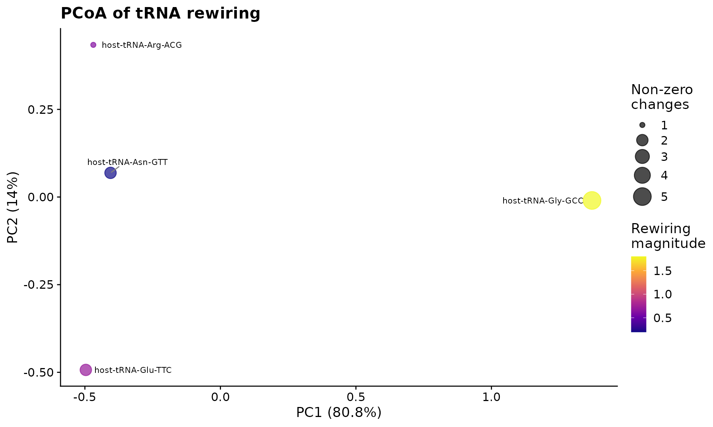
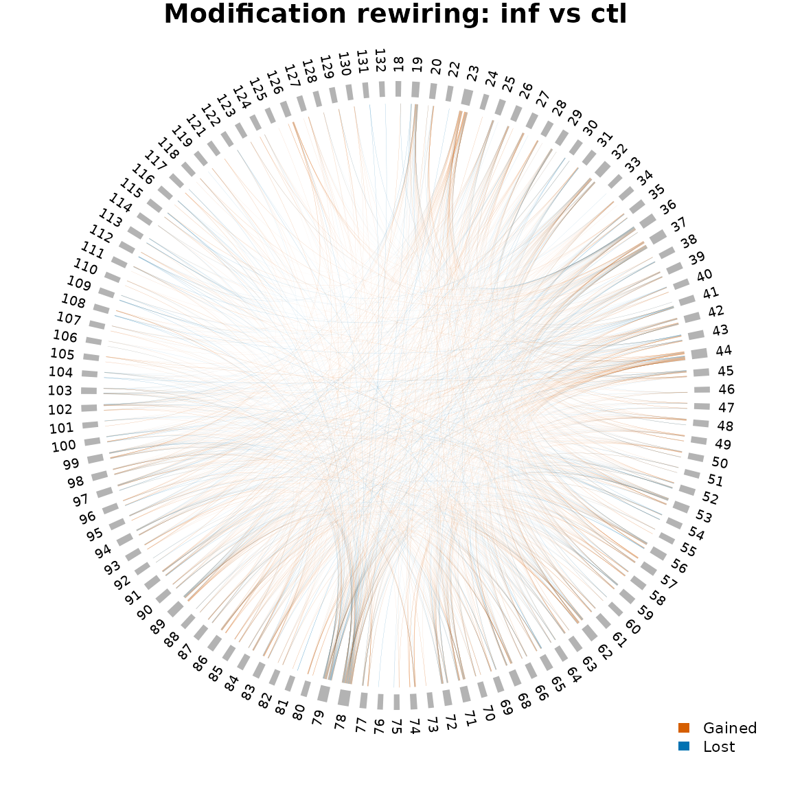

Overview
This article demonstrates clover’s modification rewiring analysis workflow. “Rewiring” refers to changes in modification co-occurrence patterns between conditions — some position pairs may gain or lose coordinated modification.
The workflow operates at the isodecoder level, collapsing gene copies to increase statistical power. It uses the same E. coli T4 phage infection dataset as the main vignette.
Load data
config_path <- clover_example("ecoli/config.yaml")
sample_info <- data.frame(
sample_id = c(
"wt-15-ctl-01",
"wt-15-ctl-02",
"wt-15-ctl-03",
"wt-15-inf-01",
"wt-15-inf-02",
"wt-15-inf-03"
),
condition = rep(c("ctl", "inf"), each = 3)
)
se <- create_clover(
config_path,
types = c("charging", "odds_ratios"),
sample_info = sample_info
)
or_data <- metadata(se)$odds_ratios
or_data$condition <- ifelse(grepl("ctl", or_data$sample_id), "ctl", "inf")Clean and aggregate odds ratios
The raw odds ratios may contain infinite values from zero-cell
contingency tables. clean_odds_ratios() caps these at a
reasonable threshold.
or_clean <- clean_odds_ratios(or_data)
glimpse(or_clean)
#> Rows: 5,432
#> Columns: 19
#> $ sample_id <chr> "wt-15-ctl-01", "wt-15-ctl-01", "wt-15-ctl-01", "wt-15-…
#> $ ref <chr> "host-tRNA-Ala-GGC-1-1", "host-tRNA-Ala-GGC-1-1", "host…
#> $ pos1 <chr> "1", "2", "3", "4", "6", "10", "11", "15", "18", "24", …
#> $ pos2 <chr> "2", "3", "4", "6", "7", "11", "58", "16", "45", "25", …
#> $ n00 <dbl> 1345, 1477, 1577, 1504, 1298, 1511, 1417, 685, 1006, 18…
#> $ n01 <dbl> 36, 12, 14, 8, 25, 7, 2, 33, 728, 25, 59, 11, 216, 77, …
#> $ n10 <dbl> 34, 40, 12, 15, 0, 11, 8, 290, 73, 73, 72, 77, 62, 69, …
#> $ n11 <dbl> 7, 5, 7, 3, 3, 3, 2, 48, 125, 8, 13, 6, 20, 11, 14, 2, …
#> $ total_obs <dbl> 1422, 1534, 1610, 1530, 1326, 1532, 1429, 1056, 1932, 1…
#> $ odds_ratio <dbl> 7.691993e+00, 1.538542e+01, 6.570833e+01, 3.760000e+01,…
#> $ log_odds_ratio <dbl> 2.0401800, 2.7334201, 4.1852258, 3.6270041, 5.8761967, …
#> $ se_log_or <dbl> 0.44809617, 0.55588702, 0.54612559, 0.72502751, 1.52502…
#> $ ci_lower <dbl> 3.196037e+00, 5.175218e+00, 2.252937e+01, 9.078874e+00,…
#> $ ci_upper <dbl> 18.5125425, 45.7393352, 191.6425500, 155.7197589, 7081.…
#> $ fisher_or <dbl> 7.69199346, 15.38541667, 65.70833333, 37.60000000, Inf,…
#> $ p_value <dbl> 1.461474e-04, 8.252984e-05, 9.729250e-10, 2.130145e-04,…
#> $ p_adjusted <dbl> 5.647847e-03, 3.437767e-03, 9.913278e-08, 7.867121e-03,…
#> $ condition <chr> "ctl", "ctl", "ctl", "ctl", "ctl", "ctl", "ctl", "ctl",…
#> $ log_or_clean <dbl> 2.0401800, 2.7334201, 4.1852258, 3.6270041, 5.8761967, …Next, collapse per-gene odds ratios to the isodecoder level. This
averages across gene copies (e.g., tRNA-Glu-TTC-1-1 and
tRNA-Glu-TTC-2-1 become tRNA-Glu-TTC).
or_ctl <- or_clean |>
filter(condition == "ctl") |>
aggregate_or_isodecoder()
or_inf <- or_clean |>
filter(condition == "inf") |>
aggregate_or_isodecoder()
or_ctl
#> # A tibble: 1,051 × 9
#> isodecoder pos1 pos2 mean_or mean_log_or sd_log_or min_pval total_reads
#> <chr> <chr> <chr> <dbl> <dbl> <dbl> <dbl> <dbl>
#> 1 host-tRNA-Ala… 1 2 7.69 2.04 NA 1.46e- 4 1422
#> 2 host-tRNA-Ala… 10 11 58.9 4.08 NA 7.03e- 5 1532
#> 3 host-tRNA-Ala… 10 999 4.70 1.55 NA 2.03e- 6 1641
#> 4 host-tRNA-Ala… 11 58 177. 5.18 NA 2.63e- 4 1429
#> 5 host-tRNA-Ala… 15 16 4.25 1.43 0.276 1.03e-11 2219
#> 6 host-tRNA-Ala… 15 18 0.472 -0.750 NA 6.93e- 7 1921
#> 7 host-tRNA-Ala… 18 45 2.04 0.699 0.229 1.69e- 8 4079
#> 8 host-tRNA-Ala… 2 3 15.4 2.73 NA 8.25e- 5 1534
#> 9 host-tRNA-Ala… 24 25 12.4 2.45 0.506 7.50e- 8 4516
#> 10 host-tRNA-Ala… 26 27 17.4 2.86 NA 6.03e- 6 2737
#> # ℹ 1,041 more rows
#> # ℹ 1 more variable: n_copies <int>Compare conditions with relative odds ratios
compute_ror_isodecoder() computes the relative odds
ratio (ROR) between two conditions with z-score significance
testing.
ror <- compute_ror_isodecoder(or_inf, or_ctl)
ror
#> # A tibble: 944 × 15
#> isodecoder pos1 pos2 mean_log_or_num se_num mean_log_or_den se_den ror
#> <chr> <chr> <chr> <dbl> <dbl> <dbl> <dbl> <dbl>
#> 1 host-tRNA… 1 2 2.62 0.468 2.04 NA 0.575
#> 2 host-tRNA… 10 11 3.91 0.449 4.08 NA -0.164
#> 3 host-tRNA… 15 16 1.78 0.186 1.43 0.276 0.355
#> 4 host-tRNA… 15 18 -0.599 0.0722 -0.750 NA 0.151
#> 5 host-tRNA… 18 45 0.737 0.209 0.699 0.229 0.0380
#> 6 host-tRNA… 2 3 3.65 0.192 2.73 NA 0.920
#> 7 host-tRNA… 24 25 2.25 NA 2.45 0.506 -0.200
#> 8 host-tRNA… 26 27 2.52 0.515 2.86 NA -0.339
#> 9 host-tRNA… 26 30 1.43 0.269 1.90 NA -0.468
#> 10 host-tRNA… 3 4 4.09 0.222 4.19 NA -0.0996
#> # ℹ 934 more rows
#> # ℹ 7 more variables: ror_se <dbl>, z_score <dbl>, p_value <dbl>, p_adj <dbl>,
#> # ci_lower <dbl>, ci_upper <dbl>, significant <lgl>Rewiring scores and dimensionality reduction
Build a matrix of ROR values (isodecoders × position pairs) and compute per-isodecoder rewiring scores.
mat <- prepare_rewiring_matrix(ror)
scores <- calculate_rewiring_scores(mat)
scores |> arrange(desc(euclidean_magnitude))
#> # A tibble: 4 × 5
#> isodecoder euclidean_magnitude mean_abs_change max_abs_change n_nonzero
#> <chr> <dbl> <dbl> <dbl> <dbl>
#> 1 host-tRNA-Gly-GCC 1.80 0.368 1.27 5
#> 2 host-tRNA-Glu-TTC 0.701 0.0987 0.543 2
#> 3 host-tRNA-Arg-ACG 0.611 0.0611 0.611 1
#> 4 host-tRNA-Asn-GTT 0.196 0.0264 0.174 2Run PCoA for dimensionality reduction and visualize the result.
pcoa <- perform_pcoa(mat)
plot_pcoa_rewiring(pcoa, scores)
PCoA of tRNA modification rewiring between control and infected conditions.
Network visualization
Build a chord diagram from the ROR data to visualize modification rewiring between positions.
ror_agg <- ror |>
dplyr::group_by(pos1, pos2) |>
dplyr::summarise(log_ror = mean(ror), .groups = "drop")
plot_chord_ror(ror_agg, title = "Modification rewiring: inf vs ctl")
Chord diagram of modification rewiring between control and infected conditions.
Session info
sessionInfo()
#> R version 4.6.0 (2026-04-24)
#> Platform: x86_64-pc-linux-gnu
#> Running under: Ubuntu 24.04.4 LTS
#>
#> Matrix products: default
#> BLAS: /usr/lib/x86_64-linux-gnu/openblas-pthread/libblas.so.3
#> LAPACK: /usr/lib/x86_64-linux-gnu/openblas-pthread/libopenblasp-r0.3.26.so; LAPACK version 3.12.0
#>
#> locale:
#> [1] LC_CTYPE=C.UTF-8 LC_NUMERIC=C LC_TIME=C.UTF-8
#> [4] LC_COLLATE=C.UTF-8 LC_MONETARY=C.UTF-8 LC_MESSAGES=C.UTF-8
#> [7] LC_PAPER=C.UTF-8 LC_NAME=C LC_ADDRESS=C
#> [10] LC_TELEPHONE=C LC_MEASUREMENT=C.UTF-8 LC_IDENTIFICATION=C
#>
#> time zone: UTC
#> tzcode source: system (glibc)
#>
#> attached base packages:
#> [1] stats4 stats graphics grDevices utils datasets methods
#> [8] base
#>
#> other attached packages:
#> [1] dplyr_1.2.1 SummarizedExperiment_1.42.0
#> [3] Biobase_2.72.0 GenomicRanges_1.64.0
#> [5] Seqinfo_1.2.0 IRanges_2.46.0
#> [7] S4Vectors_0.50.1 BiocGenerics_0.58.1
#> [9] generics_0.1.4 MatrixGenerics_1.24.0
#> [11] matrixStats_1.5.0 clover_0.1.0
#>
#> loaded via a namespace (and not attached):
#> [1] shape_1.4.6.1 circlize_0.4.18 gtable_0.3.6
#> [4] xfun_0.57 bslib_0.11.0 ggplot2_4.0.3
#> [7] GlobalOptions_0.1.4 htmlwidgets_1.6.4 ggrepel_0.9.8
#> [10] lattice_0.22-9 tzdb_0.5.0 vctrs_0.7.3
#> [13] tools_4.6.0 parallel_4.6.0 tibble_3.3.1
#> [16] pkgconfig_2.0.3 Matrix_1.7-5 RColorBrewer_1.1-3
#> [19] S7_0.2.2 desc_1.4.3 lifecycle_1.0.5
#> [22] compiler_4.6.0 farver_2.1.2 stringr_1.6.0
#> [25] textshaping_1.0.5 Biostrings_2.80.1 htmltools_0.5.9
#> [28] sass_0.4.10 yaml_2.3.12 pillar_1.11.1
#> [31] pkgdown_2.2.0 crayon_1.5.3 jquerylib_0.1.4
#> [34] tidyr_1.3.2 DelayedArray_0.38.2 cachem_1.1.0
#> [37] abind_1.4-8 tidyselect_1.2.1 digest_0.6.39
#> [40] stringi_1.8.7 purrr_1.2.2 labeling_0.4.3
#> [43] cowplot_1.2.0 fastmap_1.2.0 grid_4.6.0
#> [46] colorspace_2.1-2 cli_3.6.6 SparseArray_1.12.2
#> [49] magrittr_2.0.5 S4Arrays_1.12.0 utf8_1.2.6
#> [52] readr_2.2.0 withr_3.0.2 scales_1.4.0
#> [55] bit64_4.8.2 rmarkdown_2.31 XVector_0.52.0
#> [58] bit_4.6.0 ragg_1.5.2 hms_1.1.4
#> [61] evaluate_1.0.5 knitr_1.51 viridisLite_0.4.3
#> [64] rlang_1.2.0 Rcpp_1.1.1-1.1 glue_1.8.1
#> [67] vroom_1.7.1 jsonlite_2.0.0 R6_2.6.1
#> [70] systemfonts_1.3.2 fs_2.1.0